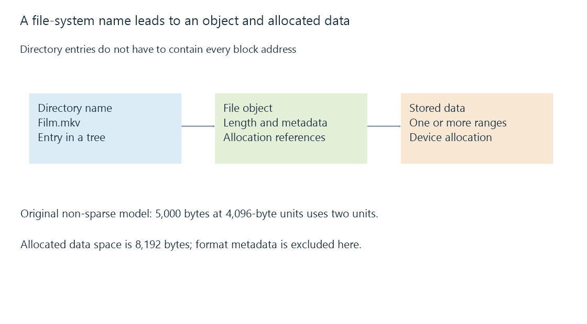

File systems: names, allocation and persistent metadata
A file system turns storage space into named files and directories, with allocation, metadata and access rules defined by its format and implementation.
A block device supplies addressable storage. A file system adds names, directories, file lengths and the rules for finding and updating data. It also records metadata such as timestamps and, where supported, ownership and permissions.
An Emby library addresses files through paths. The file system and the operating system turn those paths into readable data. A network share adds another server and protocol to that process.
A name is not the file's physical location

A file can occupy several ranges of a device. Its directory entry does not need to contain every physical block address. For example, ext4 directory entries refer to inode numbers, and inodes hold file metadata and allocation information.
This separation enables names to change without rewriting the movie's bytes. It also explains hard links, where several names refer to one file object.
Logical length and allocated space
A file's logical length describes the byte positions accessible through it. Allocated space describes storage consumed according to the file system's allocation rules. These can differ because of allocation units, sparse regions, compression or shared storage features.
For a simple non-sparse file with a 4,096-byte allocation unit:
Logical file length: 5,000 bytes
Allocation units needed: ceiling(5,000 ÷ 4,096) = 2
Allocated data space: 2 × 4,096 = 8,192 bytes
The model excludes metadata and format-specific optimizations. Sparse files can instead have a logical length larger than the data space currently allocated. A media file's displayed size is therefore not always the best measure of its physical storage cost.
Features appear in ordinary library work
| Feature | Why it matters |
|---|---|
| Large-file support | A long recording must fit as one file |
| Naming rules | Imported names must remain addressable |
| Native access controls | The server identity needs suitable rights |
| Journaling | Interrupted metadata updates can be recovered according to the format's rules |
| Change notification support | Real-time library monitoring depends on available mechanisms |
NTFS provides native Windows ACLs; exFAT does not provide equivalent per-file ACLs in its on-media format. A host can still apply mount-level or sharing access rules to exFAT storage. Those external rules do not become native ACL entries stored in each exFAT file.
A journal is also not a backup of every previous movie version. It supports consistency or recovery of specified updates. Which data are covered depends on the file system and its operating mode.
When moving a collection, consider the format, host driver and access method together. A format that accepts a large file on one computer can still present different naming, permission or notification behavior through another operating system or a NAS share.
See Also
- File size limits and large media files
- Mount points and the file system behind a path
- File ownership and permissions across a library path